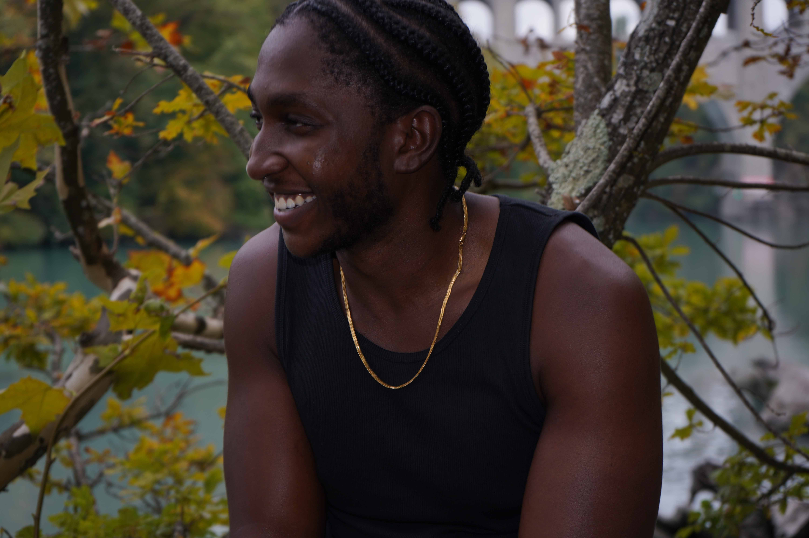
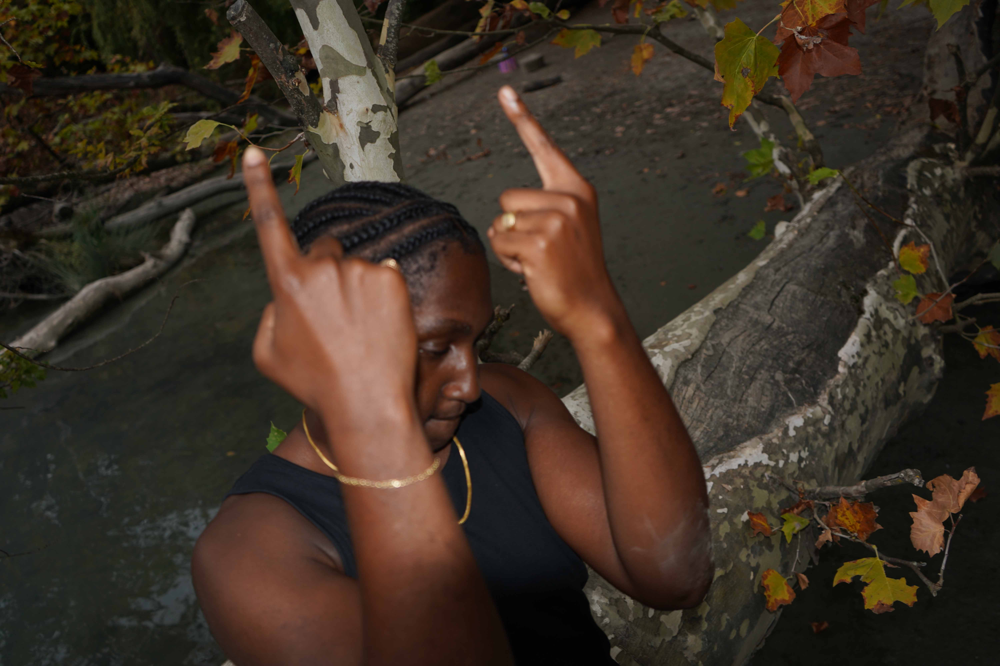
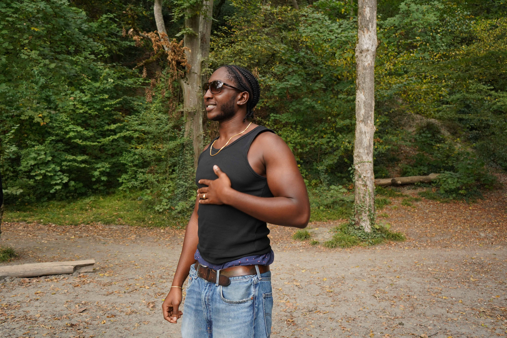
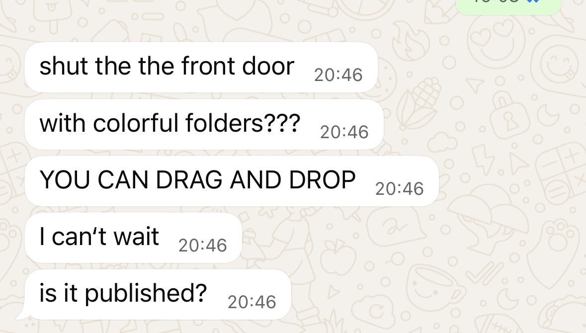

Someday. Someday. I remember things on some days. october 1st as I'm writing this, week 3 of graphic design (doing an exchange!!). Things have been up and down but I think that’s just how it is. Class is challenging since I don’t know Illustrator or After Effects and we’ve been giving in projects quickly. Man I need space on my computer and email and all that stuff. And in my new room in Geneva I need to bring my belongings from Vevey, so in other words remove space!!. I haven’t written in a while so I’m here to say hi. Hi. It’s kind of crazy to me how relationship dynamics change, and how quickly we get used to new situations. Last year I was spending all of my time with different people in visual arts, and when I arrived, I took the way we did things there as a reference point, and now I see a more “partagé” point of view. (All the points of views out there!! ) And the people I saw in class everyday were the people with whom I was with most of the time, and now I see them much rarely. But on the other hand I see new people most of the time now, and it’s pretty cool do be doing an exchange. I just gotta keep working because honestly I’m not too concentrated on classes for now so maybe I gotta pick it up. Normally I’ll lock in a bit this weekend. But I’ve been working on personal projects quite a bit. Did a photoshoot yesterday. Some crazy shit to be honest. Hold on lemme see if I still remember how to put a photo on here. Shit no more storage. Alright ill figure it out.




July 6th. I feel like I’ve done nothing this past month. Some shit happened. Not great stuff, not all bad. I had some hard discussions, and I wasn’t sober for most of them.
I have a lot more time to do things I wanted to do, but I’m not really doing them. I’ve been working at the restaurant, pretty sure I need to quit. And then I wonder where my money will come from. I was watching a movie and the main character said something like “we’re human beings, we’re not meant to sit in cubiculs” and I think I really need to change this job situation.
I do not feel very ambitious. What should excite me is just “eh”, plans are just “eh” and everything is currently “eh”. I think of travel and I just search up flixbus prices, and then leave it at that. I was going to go somewhere but I don’ t know. Today I’m feeling a little better. There’s videos I filmed that are waiting to be edited, I might give it a go. I don’t know. The project I was working my whole semester on, I just kind of regard it as “eh” at this point. I think this is part of it, but fuck I’d like to move on to the next chapter. And I need to find a way to make this last month of work more exciting, maybe mix it with my project.
Anyways, I woke up and went boxing, I’d like to join an MMA gym in Geneva. So hey maybe there are a few ambitions. Coming back here to Vevey I saw some friends I hadn’t seen in a while. So everything wasn’t all bad. And I had a pretty good festival, made some money, so at least that. But also no fuck that, I think I gotta look at the positives but what really pisses me off in this world is that sometimes I feel like shit and I hear/think “at least you made money”, like what the fuck. Everything’s shit but at least I made my little minimum wage salary like that’s supposed to change anything. Fuck. Like sure look at the bright side but we’re so accustomed to saying oh hey you did good you made money like fuck maybe I gotta find a way to make money from cool shit cause what the fuck
Think im gonna go ride on a horse right now, everything’s not all bad it’s just been a lot, but fuck I gotta wake up, a few weeks ago I was ready to conquérir jérusalem and now I’m not. Fuck. Time to wake up.
you (me) all asked for it, for what's going on but first, some crucial context:
It's the 6th of June, 16:30 as I type this. I printed my jury project yesterday. It was a big rush, I had to run to the printers and ask to come later in the day.
Luckily Julian (the goat) saved me, and I was able to print out my semester project, my photo book. it sounds so fucking weird to say "thats my photo book" but that's my photo book !
anyways, the big part is done. it's now out in existance, or pre-existance (is existance with an a ? I hope so), and now all that's left to do is set up the room I'll present it in ANYWAYS,
in a sort of way it is over (the worst part) and we made it through. this week was peculiar, I did so much stuff, went running around and I was sort of losing my shit.
but we got past that and now i'm like fuck I'm very relieved. many things have been changing my life and last week really showed me that. + a million other things going on
that we got going on. anyhoo. so glad that weight's gone. but i learned a lot and i beat the crap out of it so hell yeah.
and now i'm on my balcony, in my new appartment in Geneva. isn't that fucking insane? I got an apartment. and I'm on a balcony with a lawn chair. a month ago we were eating on the floor
since we had no table / chairs. but it was fucking amazing. i'm discovering life in a new phase and I realize I'm at an age where I'm not the young guy, I mean yes
but I started going out pretty young, started working pretty young in restauraunts cooking + waitering, and now I'm in university, a place where most of the people are my age, and I see the whole vast world,
like all the things happening. anyways I'm not sure what I'm saying here anymore but that's not really the point of it all right? this was just the context
anyways there's so many things I want to get started on with my newly found free time after the exam I can't wait. and I'm writing this at a monent where I'm extremely relieved
where I will now have the time to do my stuff. so no excuses I just wanna have fun and create shit. and thats pretty much been this year but I gotta have more fun with it
im realizing. start doing more crazy shit because the excuse art school student is perfect you know? I might stay here and do a few videos or some other work or go to vevey to see some friends
oh no im reading it now that might be cancelled. anyways. im gonna go do something. good luck with everything. bbye
also daphne is giving me danse lessons
i think i'm understanding more what was going on my head as I write as well
this is writing number three. I officially consider myself a writer. i'm gonna make this all into a newsletter so goddamn gimme all your emails. anwyways
onto the real subject. here's some context: tonight I mixed at a bar for the first time in 6 months.
the BEFORE
I woke up at 12 something. I got out of bed and onto my laptop, I had to choose songs that I was going to mix tonight. the genres were deep house / tech house. I prefer
tehcno but I do very much enjoy this too. it took me around 7 hours to download and get to know the songs I was going to mix. according to reddit you need minimum 20 songs
per hour, but more to always have a choice and adaptability. I had known this date was coming for around 2 weeks yet I waited until 2 days ago to start preparing. one reason
is because I've started editing videos every day, and I really enjoy that and I think they will come out very nicely, every session I export whatever I created and this new
practice is really helping me out. even after waiting until the last day to do most of the prep I somehow found the time to scroll a shit ton. I'm not psychologist but this
has to be some of that self sabotage they talk about. or none of those fancy terms, just what the fuck was I doing? I haven't properly mixed in a few months, and I have a
paid gig. (side note i would have said yes for a burger and a high-five) I felt drained for a good part of the day after my scrolling session and like I was advancing
very slowly. I take a shower to reset, continue on for a bit then go walk and talk. I haven't put myself out there publically in so long. Last time I did it wasn't the best
experience. and then it sort of clicked, was I really going to let one bad experience stop me from doing what I truly want to do? I'm not really sure if it's that but it kind
of made sense in the moment. I have lots of videos I've been hesitate to post, a sort of identity problem, "if i post this they'll think this or i'll only be this" which
made me realize I was breaking my own mantra. It was fear. it was time to listen to my tattoo. I tatooed risk it on my body because if I started slacking I'd want me to
wake myself up. and you know what? 18 year old me was onto something. I experimented with a clothing brand and posting me mixing a few times. where's that now? it's
behind the scenes because I want to be "sure" and "the video isn't finished" (and yes on one hand it's strategy on the other hand it stunts its development)
the DURING/AFTER
these were all thoughts that were concreticized (is this a word?) ((concrétisé)) during the mixing, which went fucking phenomenal by the way
(I didn't think I was going to put a link but here we are) SEE THIS IS WHAT I MEAN. THE IDEA EVOLVED WHEN I WENT TO MAKE IT PUBLIC. and it really made me realize
I'm scared of some stuff. and I imagined what sort of things I'd like to be doing with projects and the clothes and I imagine how I'd want them to be if I had no limits
and infinite money, and then I get demotivated to work because I'm not working on that huge project yet. but dude! you gotta go up the ranks ! if you wanna fight the enderdragon
you first gotta kill the blaze. oh and @emmy we really have to do that minecraft idea. it's gold. if we don't we'll watch someone else do it on youtube and think damn
that could have been us. and I freaking loved mixing. and there were friends that came and joined. much love to you. im gonna see if I have a photo hold on. I do not.
but I will have a little video. WHICH BRINGS ME TO MY NEXT POINT.
every single day I have to advance a little bit. and when an idea comes to mind, I have to get it done, as much as possible. for the big ones it's a bit more complicated
(i filmed a lot today and have an idea on how to edit but that'll take time) BUT I thought about writing this post and I realized oh shit it's low effort to start. now i've
been here for okay shit. it's 4:40. I wrote down that I started writing this at 04:57. I wrote in negative time. (i should sleep) and I think it's very important to do
so. If you have it, get it done and now I'm free to move onto my next one when it comes.
I think I'm ready to start posting more stuff again. or maybe not but I know I have to. I at least need to do it to truly know if I don't want to and let's be honest I do.
there's gonna be a small video on tonight because it was full of shenanigins anyways sleep tight everyone
I just re-read this. this is a little uncomprehensible. but I understood it. and there'll be a video. anyways. bisouschke as I learned we say.
much love
My birthday was 2 days ago so as usual im questioning my whole fucking existence. there's different things I want to do, or finally do, and I look at myself and I'm like wtf am I doing you know? There's different things I say I want to do but when the time finally comes around I'm not really getting to it. What the fuck? My lifes fucking great to be honest I'm in paris right now I've been eating good ass food and have expositions planned so shits going to be great. But I feel like I'm losing my mind whether it be structure or whatever, and even though I'm studying art no one here is going to be holding my hand and telling me what I need to do and shit so I just need to fucking do it, even though I'm not sure whatever the fuck it is. where the fuck is my math teacher yelling at me for not doing my homework when I really need it? and the way I think my mind works is I start doing something and It's telling me to do 4 other things at the same time, I have 9 fucking Microsoft word documents all on different things, looking at it from an outer perspective I'm like what the actual fuck ? and there's already a writing I wanted to put on here but I haven't already and I just stare at it, wondering if it's the right move or not but at the same time since I'm just fucking staring at it and staring at all these 9 other documents and whatever idea of project I want to do, I stay in the whole “conception” of it al instead of all the movement and I think that's getting to me. So you know what this might not make much fucking sense but I think I needed to write something so I'm gonna put it on the site, I'm trying to do so much fucking shit and I don't know where to start so I think I just need to start and I think this is a thought I have every day and everyday I think I understand it different but clarity isn't action so fucking here we are sorry mom for all the times I said fuck I just feel very passionately about this and it felt very fucking appropriate TIME TO UPLOAD THIS BEFORE I START QUESTIONING IT and now this cycle has gotten so bad that I don't even want to mention projects that are on-going because what if I'm just like mmmmm? you know? so fuck it I'm not sure if I should mention everything or nothign but come back in a little bit to this site or instagram (if I dont end up deleting it) and look at whats been going on much love to everyone my days actually been really fucking good I just had that in my mind oh AND i may not have my math teacher but I recommend joey diaz yelling at you and for that extra sauce of motivation if once you're moving may I suggest the german ww2 soldier making sure you study
this started 4 weeks ago in a class of problématiques numériques, we had to choose a project and I thought about making a website.
i've been working on it every week, and now the site is almost done and now I'm wondering why I chose to do this in the first place.
i have a tendency to sometimes start things and not finish. I always try to do things I truly want, which is great because it leads me to doing
a bunch of creative projects and other fun shit, but now it's like I don't really want to finish this site, and it's hard to project myself
and imagining it be done. I And then I think I might as well do it for "me" 4 weeks ago, no? I don't know, it's a monday and
I'm rethinking my whole life. I feel like I don't have enough time to do everything I want, and now I'm seeing if I can study
psychology on the side. That sounds like a huge contradiction, and maybe it is but it kind of makes sense.
okay I just put on innerbloom. now I really want to finish this site and publish. I'm going to start publically showing my work more.
that's a big reason as to why I decided to make this. also I've always wanted a place to yap about whatever. I can technically do that anywhere okay
but I just found a reason to finish the site so keep it to yourself. you know what I just realized? my friends say I don't publish what I do, I don't share it.
and now I'm thinking, I'm an artist in 2025 and I'm not putting my shit out there? isn't that fucking crazy? i'm gonna say that again because I need to read it again, isn't
that fucking crazy? borderline delusional. AND NOT IN THE GOOD KIND. anyways damn, it's monday morning and I have the sun to chase.
I take way too long to do small ass tasks. I take a while to reply to messages and I'm not really sure why. but you know what I realize? since I take time
to establish the foundation of the project, it has its legimate reason to exist. and you know rwhat, I'm listening to "la mente vola" and I'm realizing I'm going to live
in the world I will have created. isn't that super fucking cool? I'm creating my paradise, and Headache says if you want to know how paradise really feels, you have to try
somehow to be a little like a god. that's my mantra today. I can control my thoughts, I can shape my future and I can create the world
I will live in. this is when I realize, I'm already living in it. until death all defeat is psychological. it's time to get up and live. "Shoot for the stars, so if you fall you land on a cloud",
I love that but now I'm going to forget the possiblity of landing on the cloud, my target is fixed and now with direction. in attempt to be more precise and direct, nothing too crazy,
I announce that I am now chasing the sun.
